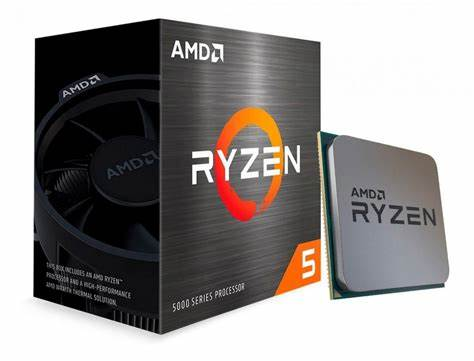

|
Processadores baratos são dificeis de achar, então, fizemos para você uma lista com
as
top 3 melhores processadores baratos para você comprar:
- AMD Ryzen 5 5600X e Ryzen 5 5600:

- Ambos possuem 6 núcleos e 12 threads.
- O Ryzen 5 5600X tem um clock base de 3,7 GHz, enquanto o Ryzen 5 5600 tem 3,5 GHz.
- O 5600X é um pouco mais caro, mas oferece melhor desempenho. Se a diferença de preço for
pequena, vale a pena investir nele.
- Ótima escolha para jogos e tarefas do dia a dia.
- AMD Ryzen 7 5700X:

- Com 8 núcleos e 16 threads, é ideal para gamers que também fazem edição de vídeo ou
streaming.
- Frequência base de 3,4 GHz e boost de até 4,6 GHz.
- Consumo de energia baixo (apenas 65W), permitindo uso com placas-mãe mais simples.
- AMD Ryzen 5 4600G:

- Similar ao Ryzen 5 5600, mas com gráficos integrados.
- 6 núcleos e 12 threads com clock de 3,7 GHz.
- Ideal para montar um PC econômico sem a necessidade de uma placa de vídeo dedicada.
Lembrando que os preços podem variar, mas com os recentes lançamentos da
Intel e AMD, a tendência é que
esses processadores fiquem cada vez mais acessíveis.
|